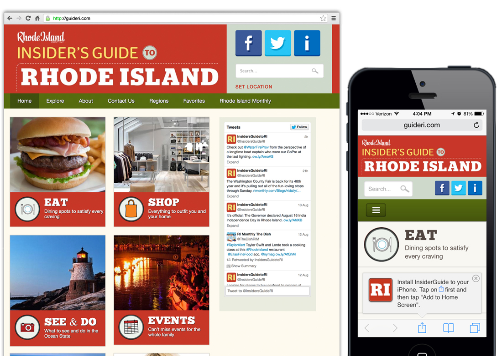
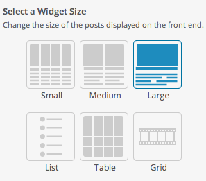

Leading & Managing WordPress Products and Projects
Scott Sousa
Director of Web Engineering/Lead Developer
Slocum Design Studio
Who is Slocum Design Studio?
Located in Dartmouth, MA
Team of 8 (6 local, 2 abroad)
Family-owned and run business
WordPress
Develop and manage the Old Colony website
Who am I?
26 years old
Previously was a web development instructor at Old Colony
Associate Degree: Web Site Development
Bachelor's Degree: Graphic Design & New Media
Drag racer (hobby)
VIDEO
Let's get back on topic
First Up: Client Projects
Smaller websites (i.e. 5-10 pages)
Larger applications (web apps)
Shifting towards larger sites from larger companies and enterprise level
Let's take a look at some examples
GuideRI Web App

The biggest website for the smallest state (and smallest devices)
Listings based on your location
Use current physical location and determine nearest listing
Geolocation with JavaScript
<script type="text/javascript">
if ( 'geolocation' in navigator ) {
// Get & watch position
navigator.geolocation.watchPosition(
// Success
function( position ) {
// Log the position to the browser console
console.log( position );
},
// Error
function() {
// Log the position error message to the console
console.log( 'Position is not available.' );
},
// Options (high accuracy enabled)
{ enableHighAccuracy: true }
);
}
</script>
Displaying the results
Location info is included in the query for the data
Filtering parameters are also added to the query
So how do we accomplish something like this?
WordPress includes WP_Query() which is useful to make the query...
but there isn't wasn't an easy way to display the results
In late 2014, we introduced Conductor Plugin to the mix
Widgets - Querying Content
Layouts - Design
What is Conductor?

Premium WordPress plugin that Slocum Design Studio developed
Makes it easy for to display WordPress content — without code
Custom page layouts
Content displays
Works across a majority of WordPress themes
How does Conductor work?
Load Conductor template in place of normal requested template
Conductor templates contain widget areas which can output content
Output content with Conductor Widgets
Add other widgets into the mix to create a more robust experience
Back to GuideRI for just a sec
Filtering the results
To allow for filtering, we need to be able to adjust the query of a Conductor Widget
We can't modify the Conductor plugin (even though we maintain the source code)
Future updates will break what we've built
So how do we accomplish this? Hooks
What are WordPress Hooks?
A term used to categorize Actions and Filters
Actions
Represent a place in time where a function or logic can be executed during page load
Filters
Allow data to be modified before it is used within logic
Conductor Hooks
Conductor contains 103 actions and 84 filters
conductor_query_argsA filter which allows the query to be modified before it is executed
conductor_query_args
<?php
/**
* This function modifies the Conductor Widget query arguments to add Deals query data.
*/
add_filter( 'conductor_query_args', 'guideri_conductor_query_args', 10, 4 );
function guideri_conductor_query_args( $query_args, $type, $widget_instance, $conductor_query ) {
// Meta query
$query_args['meta_query'] = array(
// Deal Name exists
array(
'key' => 'deal_name',
'compare' => 'EXISTS'
),
// Deal Name is not empty
array(
'key' => 'deal_name',
'value' => array( '' ),
'compare' => 'NOT IN'
)
);
// Meta key
$query_args['meta_key'] = 'deal_name';
return $query_args;
}
Let's look at some other examples of client projects
Brookline.com uses our Minimize Theme
Managing development of WordPress themes
Let's take a look at what's involved:
Styles (CSS)
Templates
The Loop
Navigation
Sidebars & Widgets
Comments
Author comments styled differently
Search
wp_link_pages()
But wait there's more!
Date and time (should be linked if viewing a single Post without a title)
Internationalization
Everything has to be GPL (or compatible)
The "WordPress way"
No PHP or JavaScript errors
Sanitize everything
Screenshot must be included
Prefix all functions, options, and variables
"Don't do things in a theme considered plugin territory"
All theme options must be added using the Customizer API (04/21/15)
Guidelines are constantly changing
Why?
All of these rules and guidelines will help make you a better WordPress developer
We also have Note
Note is our companion plugin to Conductor
Available for free
Managing development of WordPress plugins
Let's take a look at what's involved:
My typical weekly schedule
Monday - Wednesday: Product development*
Thursday - Friday: Client projects*
Products: Responsibilities
Review new themes & plugins
Coordinate & delegate development tasks
Coordinate releases
Maintain and update
Support
Client Projects: Responsibilities
Discovery
Create development environments
Custom development Create production environments
Deadlines
Other Responsibilities
Content marketing - Blog posts, social media posts
Following WordPress core development and decisions
Any Questions?